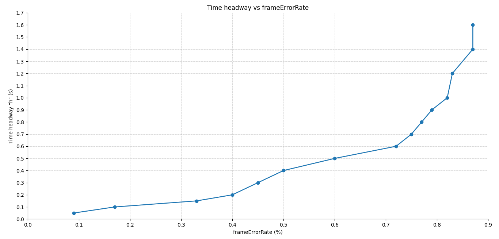

Caso 4 · Pérdida artificial de paquetes con frame error rate (FER)
En el Caso 2 los beacons se perdían porque la señal no alcanzaba, y eso dependía de la distancia entre los autos. Aquí se pierden a propósito: cada frame que llega se descarta con una probabilidad fija, el frame error rate (FER), igual para todos los autos y sin importar la distancia. El caso usa el escenario Braking del ejemplo platooning, con Ploeg.
Resumen
- Pregunta: ¿qué fracción de los beacons se puede perder sin que el pelotón choque?
- Escenario:
Braking, del ejemploplatooning. - Controlador: Ploeg (
-r 3). - Parámetros: el FER y el tiempo de separación
h. - Resultado principal: con
h = 0.5 s, el pelotón choca desde un FER de 0.6. Con máshaguanta más pérdida: conh = 1.4y1.6 s, desde 0.87. - Qué se toca: solo
omnetpp.ini. El descarte ya viene en Veins: no hay que programar ni recompilar.
1 · Antes de empezar
Carga los entornos como en el Caso 1.
Si vienes del Caso 3, deja otra vez el intervalo de envío de beacons en 0.1 s, el valor que usan estas corridas.
2 · Fundamentos
Qué es el FER
El frame error rate, o tasa de error de trama, es la fracción de frames que se pierden. El frame es la unidad que transmite la capa MAC de 802.11p, y el beacon de Plexe viaja dentro de uno: perder el frame es perder el beacon.
- Se escribe como fracción entre 0 y 1, no como porcentaje: 0.6 significa 60 %. Con 0, el valor por defecto, no se descarta nada, y con 1 se descarta todo.
- En Veins es un parámetro de la MAC,
frameErrorRate. Su declaración lo describe como una tasa de descarte artificial, pensada para pruebas.
Cómo decide Veins qué frame descartar
Cada vez que un frame llega a la MAC de un auto, Veins saca un número al azar entre 0 y 1 y descarta el frame si es menor que el FER:
dblrand()entrega un número al azar, uniforme entre 0 y 1. Por eso, con un FER entre 0 y 1, la probabilidad de descartar cada frame es exactamente el FER. Con un FER de 1 o más se descartan todos.- El sorteo se hace en cada receptor y para cada frame, por separado. Un mismo beacon puede llegarle a un auto y perderse para otro.
- Actúa después de la capa física: el frame ya llegó con potencia suficiente y se decodificó bien, y aun así se descarta.
Por qué el FER le importa a Ploeg
Ploeg recibe por beacon la aceleración del auto de adelante y, si un beacon se pierde, sigue usando el último que recibió (ver Controladores › Datos que usa). Con FER, cada beacon perdido deja a Ploeg usando un dato más viejo.
Qué esperamos ver
- Con un FER bajo, nada cambia respecto del caso base.
- Al subirlo, el dato del auto de adelante envejece y, en algún punto, el pelotón choca.
- Con
hmás alto hay más margen, así que el pelotón debería tolerar más pérdida, como en el Caso 3.
FER frente a potencia
Con potencia (Caso 2), la pérdida depende de la distancia entre los autos: con más distancia hizo falta más potencia. Con FER, la pérdida es un número fijo, igual para todos los autos y sin importar la distancia.
3 · Dónde vive cada cosa
| Qué | Dónde | En este caso |
|---|---|---|
| El FER | ~/src/plexe/examples/platooning/omnetpp.ini, línea *.**.nic.mac1609_4.frameErrorRate |
Se cambia |
El tiempo de separación h |
El mismo archivo, línea *.node[*].scenario.ploegH |
Se cambia en la grilla |
| El intervalo de envío de beacons | El mismo archivo, línea *.node[*].prot.beaconingInterval |
Se deja en 0.1 s |
| La declaración del parámetro, con su valor por defecto (0) | Veins, src/veins/modules/mac/ieee80211p/Mac1609_4.ned |
No se toca |
| La lectura y el descarte | Veins, src/veins/modules/mac/ieee80211p/Mac1609_4.cc: se lee en initialize() y se aplica en handleLowerMsg() |
No se toca |
*.**.nic.mac1609_4es la capa MAC de 802.11p de todos los autos, la misma de la potencia y el bitrate del Caso 2. Por eso el FER es un parámetro de Veins, no de Plexe.- Al lado está
ackErrorRate, que hace lo mismo con las confirmaciones de recepción (ACK). Los beacons van en broadcast y no llevan ACK, así que este caso no lo usa.
4 · Cómo se hizo, paso a paso
Paso 1 · Elegir h
En cada corrida de la grilla, h toma un valor distinto:
Instante del frenado
Las notas de esta grilla no registran en qué instante frenó el líder.
Paso 2 · Cambiar el FER
En el mismo archivo:
# Antes (por defecto)
*.**.nic.mac1609_4.frameErrorRate = 0.0
# Después, por ejemplo
*.**.nic.mac1609_4.frameErrorRate = 0.6
Y corre Ploeg como en los casos anteriores:
Con -c BrakingNoGui corre sin ventanas.
Se probó con un FER de 1.2 y el pelotón chocó: con un valor de 1 o más se descartan todos los frames.
Paso 3 · Recorrer la grilla
- Para cada
h, se sube el FER hasta encontrar el menor que produce choque. - El resto queda en sus valores por defecto: 100 mW, 6 Mbps, beacons de 200 bytes cada 0.1 s, prioridad 4 y el líder a 100 km/h.
Así se obtuvieron 15 umbrales, con h entre 0.05 y 1.6 s.
Paso 4 · Graficar la curva
Igual que en el Caso 3, con un script de Python que trae los datos escritos a mano:
graficoFER.py
import pandas as pd
import matplotlib.pyplot as plt
import numpy as np
from matplotlib.ticker import FormatStrFormatter
# =========================
# 1) Datos actualizados
# =========================
df = pd.DataFrame({
'Time headway "h" (s)': [
0.05, 0.1, 0.15, 0.2, 0.3, 0.4, 0.5, 0.6,
0.7, 0.8, 0.9, 1.0, 1.2, 1.4, 1.6
],
'frameErrorRate (%)': [
0.09, 0.17, 0.33, 0.4, 0.45, 0.5, 0.6, 0.72,
0.75, 0.77, 0.79, 0.82, 0.83, 0.87, 0.87
]
})
# =========================
# 2) Ordenar por eje X
# =========================
df = df.sort_values(
by=['frameErrorRate (%)', 'Time headway "h" (s)'],
ascending=[True, True]
).reset_index(drop=True)
x = df['frameErrorRate (%)']
y = df['Time headway "h" (s)']
# =========================
# 3) Crear gráfico
# =========================
fig, ax = plt.subplots(figsize=(12, 7))
ax.plot(x, y, marker="o", linewidth=1.8, markersize=6)
# =========================
# 4) Límites
# =========================
ax.set_xlim(0, 0.9)
ax.set_ylim(0, 1.7)
# =========================
# 5) Eje X cada 0.1
# =========================
ax.set_xticks(np.arange(0, 0.91, 0.1))
ax.xaxis.set_major_formatter(FormatStrFormatter('%.1f'))
# =========================
# 6) Eje Y cada 0.1
# =========================
ax.set_yticks(np.arange(0, 1.71, 0.1))
ax.yaxis.set_major_formatter(FormatStrFormatter('%.1f'))
# =========================
# 7) Cuadrícula
# =========================
ax.grid(True, which='major', linestyle="--", linewidth=0.6, alpha=0.6)
# =========================
# 8) Solo abajo e izquierda
# =========================
ax.tick_params(
axis='both',
which='both',
top=False,
right=False,
labeltop=False,
labelright=False,
labelsize=10
)
ax.spines["top"].set_visible(False)
ax.spines["right"].set_visible(False)
# =========================
# 9) Etiquetas y título
# =========================
ax.set_xlabel("frameErrorRate (%)")
ax.set_ylabel('Time headway "h" (s)')
ax.set_title("Time headway vs frameErrorRate")
plt.tight_layout()
plt.show()
Es el mismo script del Caso 3, con otros datos y otras etiquetas. Se corre igual:
El eje dice %, pero los valores son fracciones
La etiqueta del eje horizontal, frameErrorRate (%), quedó mal: los valores van de 0 a 1, como el parámetro. Un 0.6 en el gráfico significa 60 %, no 0.6 %.
5 · Resultados
Grilla de h y FER

Cada punto es un valor de h (eje vertical) y el menor FER con que ese h chocó (eje horizontal).
h (s) |
Menor FER con choque | En porcentaje |
|---|---|---|
| 0.05 | 0.09 | 9 % |
| 0.1 | 0.17 | 17 % |
| 0.15 | 0.33 | 33 % |
| 0.2 | 0.4 | 40 % |
| 0.3 | 0.45 | 45 % |
| 0.4 | 0.5 | 50 % |
| 0.5 | 0.6 | 60 % |
| 0.6 | 0.72 | 72 % |
| 0.7 | 0.75 | 75 % |
| 0.8 | 0.77 | 77 % |
| 0.9 | 0.79 | 79 % |
| 1.0 | 0.82 | 82 % |
| 1.2 | 0.83 | 83 % |
| 1.4 | 0.87 | 87 % |
| 1.6 | 0.87 | 87 % |
- Mientras mayor es
h, más pérdida tolera el pelotón. Conh = 0.05 schoca desde un FER de 0.09; con el valor por defecto, 0.5 s, desde 0.6. - La curva se aplana. Hasta
h = 0.6 sel umbral sube rápido, de 0.09 a 0.72. Después casi no se mueve: entreh = 0.6y1.6 ssolo pasa de 0.72 a 0.87, y con 1.4 y 1.6 s es el mismo.
Límites de estos resultados
- "Choca o no choca" es una medida gruesa: no dice cuánto se acercaron los autos.
- Los umbrales valen para estas condiciones: 100 mW, 6 Mbps, beacons de 200 bytes cada 0.1 s, prioridad 4 y el líder a 100 km/h.
6 · Errores frecuentes
| Síntoma | Causa | Solución |
|---|---|---|
| El pelotón choca con cualquier valor | Escribiste el FER como porcentaje, por ejemplo 60: todo valor de 1 o más descarta todos los frames |
Escríbelo como fracción: 0.6 |
| Los resultados de un FER borraron los del anterior | El nombre del .vec no incluye el FER |
Guarda el PDF antes de cambiar de valor |
| Los autos aceleran o frenan antes de que frene el líder | Cambiaste ploegH sin ajustar la inserción |
Frena en t = 20 s o ajusta platoonInsertHeadway (Caso 1) |
7 · Pendientes
# PENDIENTE: anotar en qué instante frenó el líder en estas corridas (no quedó registrado)
# PENDIENTE: gráficos de velocidad y distancia de algunas corridas (hoy solo está la curva de umbrales)
# PENDIENTE: medir el error de espaciamiento en función del FER, no solo si choca o no
# PENDIENTE: contrastar con el Caso 2, traduciendo la potencia a pérdida efectiva de beacons
8 · Siguiente paso
El Caso 5 deja de lado la comunicación y cambia lo que hace el líder: un perfil propio de aceleración y velocidad.